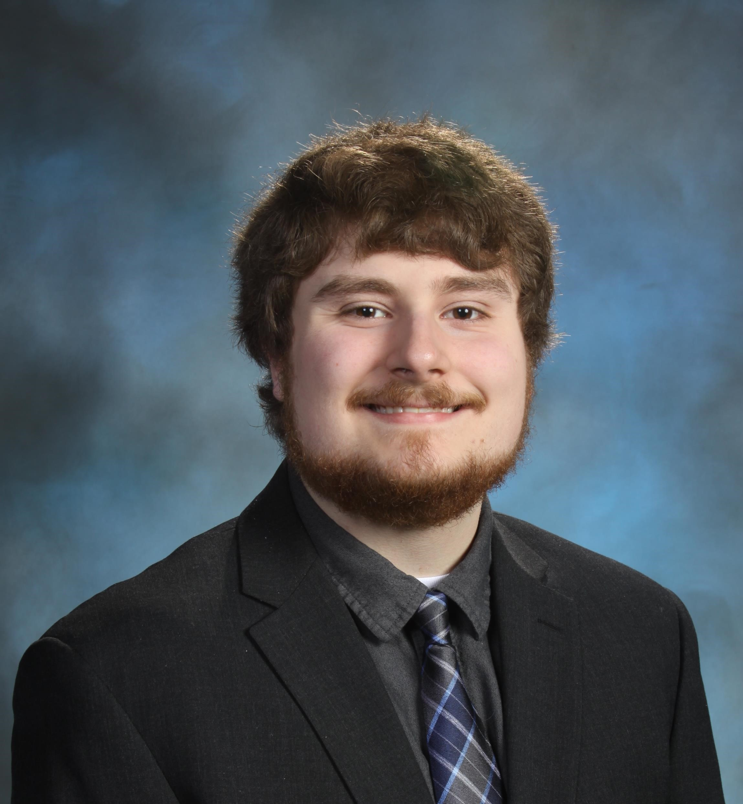

This webpage was designed and created by Andrew Dolge, Christian Linhardt, Zach Glasgow, and Issam Himmi. We are Computer Science students at the University of St. Thomas and this website was created for our Web Development class. The purpose of this project is to create a prototype for a possible class registration system replacement. This class registration system was built with Vue.js, and styling with Bootstrap, and a database powered by Sqlite3. Students or Faculty are able to register and login on our login page, and after logging in are redirected to our search system where students are able to register or waitlist for classes, with faculty being able to view the current roster for their classes. There is a brief video at the bottom of this page that will go through our application in more detail.
Andrew Dolge is a senior at the University of St. Thomas pursuing a degree in Computer Science with an Applied Statistics minor. He has been coding ever since his freshman year, starting out with a borrowed copy of the 2003 edition of Visual Basic .NET. He has moved on to learn to code in C++, Java, Python, and now Javascript/HTML/CSS/Vue/Boostrap/Node.js.
Christian Linhardt is a senior at the University of St. Thomas. He is an accounting major and computer science minor and is pursuing a career in Technology Audit. He enjoys nature and hiking, and his goal is to visit every national park.
Zachary Glasgow is a senior at the University of St Thomas. He is a Computer Science major and Aerospace Studies minor and he is a member of Air Force ROTC who will commission next May and will go to training to be a Remotely Piloted Aircraft Pilot. He enjoys playing video games, cards and hanging out with his roommates.
Issam Himmi was born in Morocco on February 15th, 1996, and moved to the United States when he was seven years old. He is currently a senior at the University of St. Thomas pursuing a degree in Computer Science. His hobbies include tinkering with computers, playing video games, and watching basketball.